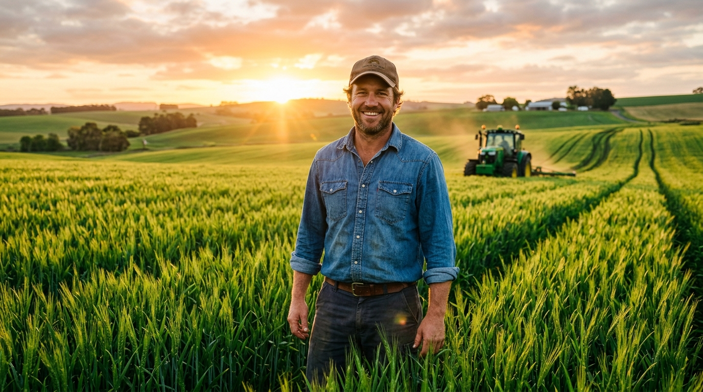
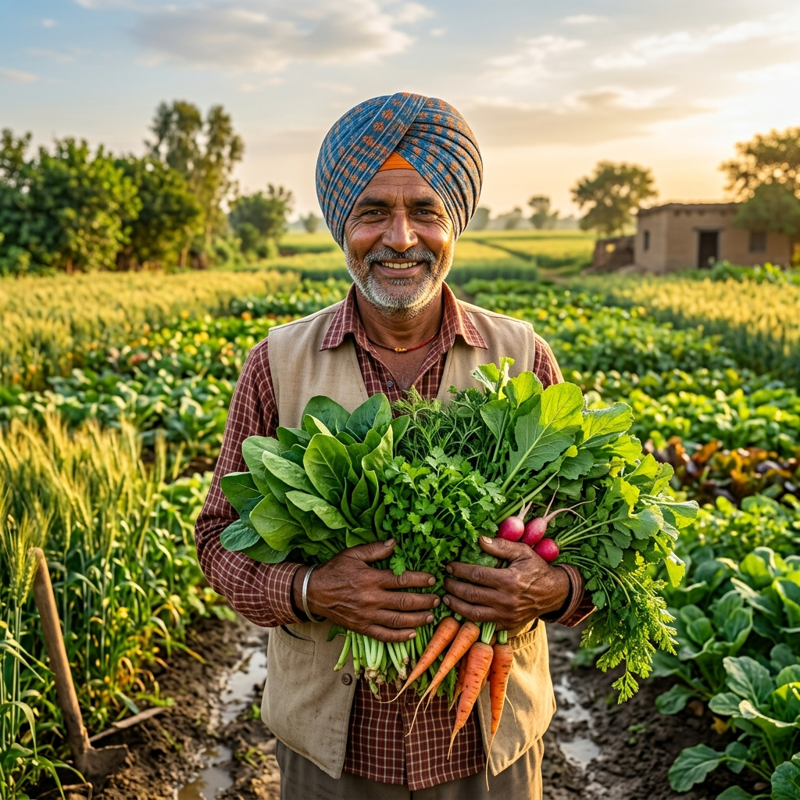

Smart Farming for Small & Large Farmers
Plan according to upcoming microclimate weather forecasts, scan and diagnose crop diseases with instant treatment solutions, and consult your multilingual Voice & Text AI Assistant in any language.

Healthy Golden Wheat
Optimum Tillering • Zero Rust
Spraying Window: Optimal
Wind < 8 km/h • 0% Rain Risk
Upcoming Weather & Microclimate Advisory
Precision 7-day agricultural forecasts tailored for spraying, irrigation timing, and fungal risk prevention.
Ludhiana, Punjab
Agricultural Weather Station • Real-Time Satellite Feed
🌾 Farmer Action Advisories for Today
Field Spraying: Optimal Window
Calm winds and clear skies. Excellent window for foliar fertilizer or pest spraying.
Irrigation Advisory: Light Irrigation
Soil moisture is moderate. Schedule light drip irrigation for wheat/vegetables before 10 AM.
Crop Health: Low Fungal Risk
Dry conditions suppress fungal spore germination. Continue routine monitoring.
📅 7-Day Precision Agricultural Weather Forecast
AI Crop Disease Scanner & Pathology
Upload or drop any crop foliage image. Our agronomic neural net scans leaf tissue, detects pathogens, and prescribes organic & chemical cures.
Upload Custom Fine-Tuned Model Weights
Select your exported model checkpoint (.onnx, .tflite, or TensorFlow.js model.json)
Drop Crop Leaf Photo or Tap to Upload
Supports JPG, PNG, WEBP from camera or gallery
Tomato (Solanum lycopersicum)
🔍 Identified Symptoms
🌿 Organic / Biological Treatments
🧪 Chemical / Fungicide Protocols
🛡️ Long-Term Prevention & Soil Health
Farmers Multilingual AI-Chatbot
Ask anything by voice or text in any language. Learn how to plant any crop, diagnose issues, and get verified solutions.

KisanMitra AI Assistant
🟢 Online • Multilingual Voice & Text
Comprehensive Crop Blueprints & How to Farm
Scientific, step-by-step planting roadmaps from land preparation and seed bio-priming to harvesting and post-harvest storage.
🧪 NPK Fertilizer Dosage Calculator
Calculate exact bags of Urea, DAP, and Potash based on your field acreage.
Urea (46% N)
DAP (18:46:0)
MOP (Potash)
📈 Live Mandi Crop Market Rates
Simulated wholesale benchmark prices across major agricultural markets.
| Commodity | Min | Max | Modal Price | 24h Trend |
|---|
Global Agricultural Datasets & Pre-Trained Models Hub
Leverage curated, peer-reviewed crop pathology datasets with over 150,000+ labeled images for training, fine-tuning, and direct testing in our AI scanner.